做内容之前，
先把三件事定下来：
讲什么、凭什么、缺什么。
Before you make anything, settle three things:
what you're saying, why it holds, what's missing.
这个 Skill 用三步做完：定效果、定框架、补齐内容。每一步都有产物，都要你点头；交接前还有脚本把没核实的东西拦下来。
This skill does it in three steps: decide the effect, lay out the frame, fill in the content. Every step leaves an artifact and waits for your nod — and a script blocks unverified claims before handoff.
它交出去的不是大纲，是一份带来源和核实状态的策划稿：下面是其中两条。
What comes out isn't an outline. It's a planning document where every fact carries a source and a verification state — here are two entries from one.
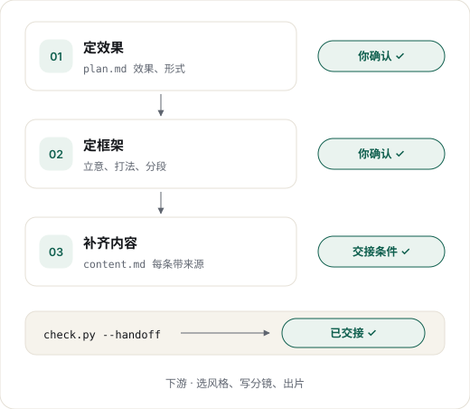
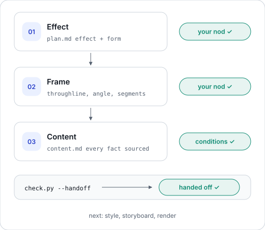
docs/replay/news-artemis/content.md
8 段 · 38 条信息
8 segments · 38 facts
| 编号ID | 这条信息The fact | 种类Type | 来源Source | 状态State |
|---|---|---|---|---|
| P1-1 | 美东 4 月 6 日 19:02 到达离地球最远处 252,756 英里（约 406,771 公里），载人航天离地球最远的纪录 At 19:02 EDT on April 6 the crew reached 252,756 mi (about 406,771 km) from Earth — the farthest humans have ever been. | B1 | NASA 返回新闻稿 · 导语；飞掠博客 · 19:02 条 · 2026-11-08 · 一手 NASA return release · lede; flyby blog · 19:02 entry · 2026-11-08 · primary | 已核实verified |
| P6-7 | 博客写：新纪录比阿波罗 13 号远 4,111 英里（必须写清里标了：和 P1-1、P6-1 相减的 4,101 英里对不上） The blog says the new record is 4,111 mi farther than Apollo 13 (the note says it doesn't match the 4,101 mi you get from P1-1 and P6-1). | B1 | 飞掠博客 · 7:02 p.m. 条 · 2026-11-08 · 一手 Flyby blog · 7:02 p.m. entry · 2026-11-08 · primary | 有冲突conflicting |
先定效果和形式：给谁看，做成什么样
First, decide the effect and the form: who sees it, in what shape
这一步不写正文，只定两件事：给谁看、做成什么形式。效果要回答六个问题——答不上来的，它才问你，而且每个问题都带一个默认答案。
No prose yet. This step settles two things: who it's for and what shape it takes. The effect has to answer six questions — only the ones you can't answer get asked back to you, each with a default you can accept with one word.
问的规矩
How it asks
- 读得出的不问；读不出的才问，先问终点、阻力、接触时刻。It doesn't ask what it can read off your words. Only the gaps get questions, starting with the end state, the resistance, the moment.
- 一次最多 5 个问题。At most five questions at a time.
- 每个问题附一个默认答案，你可以只回「按默认」。Every question comes with a default; "use the default" is a complete answer.
这一步的产出
What this step leaves behind
plan.md里的需求、效果、形式三张表，和content.md的资料清单。Three tables inplan.md— brief, effect, form — plus the source list incontent.md.- 状态行写「效果待确认」；你确认了才往下走。The status line reads "effect pending confirmation". Nothing moves until you confirm.
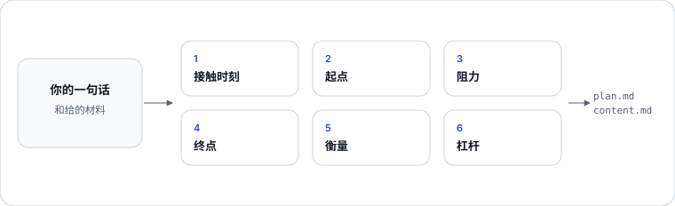
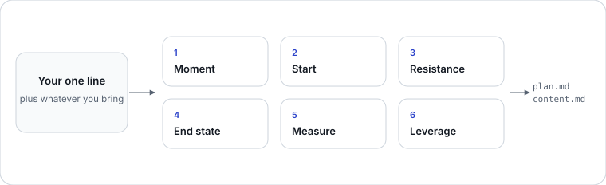
news-artemis/plan.md · 效果表| 接触时刻Moment | 视频号、抖音的推荐流里刷到，前 3 秒决定看不看；留下来的会看几分钟Scrolled past in a feed; the first 3 seconds decide it; whoever stays watches for minutes |
|---|---|
| 阻力Resistance |
① 又一条航天新闻，阿波罗早就去过了 ② 轨道、引力这些听不懂 ③ 几十万公里只是个数字，没感觉 ① Another space story — Apollo already did this ② Orbits and gravity go over my head ③ A few hundred thousand kilometres is just a number |
| 终点End state | 能对别人说出「这次比阿波罗还远，56 年来第一次」，记住下一次在 2027 年；不要导流动作Can tell someone "this went farther than Apollo, first time in 56 years"; remembers the next one is in 2027; no call to action |
再定打法和框架：每段把人从哪个念头带到哪个念头
Then the angle and the frame: each segment moves a reader from one thought to the next
先给你 2–3 个打法让你选。两个打法之间的区别必须在于抓哪条阻力、用哪个杠杆——只是换句话说的，不算两个。选定之后按段排，每段写四件事。
You get two or three angles to choose from. They have to differ in which resistance they answer and which piece of leverage they use; a rephrasing isn't a second angle. Once you pick one, the segments get laid out, each with four things written down.
- 受众：从 → 到Reader: from → to
原来的念头 → 看完这段的念头或动作。「到」不写「知道 X」。The thought they arrive with → the thought or action they leave with. "Knows X" doesn't count. - 要讲的点The points
一点一句，写内容不写动作。One sentence per point; content, not instructions. - 怎么证明How it's proven
用什么让人信：事实、原文、演示、数据。What makes it credible: a fact, a source, a demo, a number. - 篇幅Length
这一段给多少字（或多少秒）。How much room it gets — words or seconds.
这一步写进 plan.md 的立意、框架、效果自查、取舍、缺口，状态改成「框架待确认」，再等你确认。
This step writes the angle, the frame, the self-check, what was cut, and the open gaps into plan.md; the status becomes "frame pending confirmation" and waits for you again.
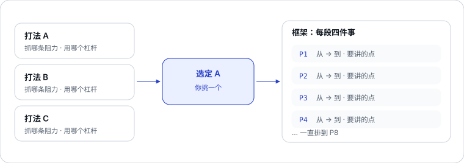
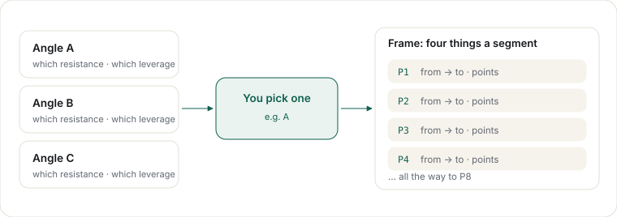
news-artemis/plan.md · 框架 P1 行| 受众Reader | 「又一条航天新闻」→「人类飞得最远的一次？」"Another space story" → "The farthest humans have ever gone?" |
|---|---|
| 要讲的点Points |
a. 离地球最远 252,756 英里，约 406,771 公里，人类飞得最远的一次 b. 2026 年 4 月，四名宇航员绕到月球背面又平安回来 a. 252,756 mi (about 406,771 km) from Earth — the farthest humans have flown b. In April 2026, four astronauts went behind the Moon and came back safely |
| 怎么证明Proof | NASA 返回新闻稿的纪录数字The record figure in NASA's return press release |
| 篇幅Length | 15 秒15 seconds |
最后补齐内容：每条信息带来源和状态
Finally, fill it in: every fact carries a source and a state
第三步最重。每一段要讲的东西，都要落成一条条信息，每条写全四样。
This is the heaviest step. Everything a segment wants to say becomes individual facts, and each fact is written out in four parts.
| 写什么Field | 拿 P1-1 举例P1-1, as an example |
|---|---|
| 内容The fact | 美东 4 月 6 日 19:02 到达离地球最远处 252,756 英里（约 406,771 公里）19:02 EDT, April 6: 252,756 mi (about 406,771 km) from Earth |
| 种类Type | B1——数量里的一条数字；自己统计的写 G1，只有公司自己说的写 C4B1, a single figure; your own measurement is G1; something only the maker claims is C4 |
| 来源Source | NASA 返回新闻稿 · 导语；飞掠博客 · 19:02 条 · 2026-11-08 · 一手NASA return release · lede; flyby blog · 19:02 entry · 2026-11-08 · primary |
| 必须写清的Must be clear | 口径：离地球的最远距离；NASA 统计；2026-04-06；英里Basis: farthest distance from Earth; counted by NASA; 2026-04-06; miles |
状态只有四种
Four states, no more
已核实verified 待核实unverified 有冲突conflicting 已过期expired
创作里编出来的东西写「设定」，不核实。除了正文，这一步还要写：受众原话（照录不改写）、素材逐张（画面上有什么字、标志、人脸）、画面约束（一条一件事）、每段要的效果和参考说法。
Invented material is marked "fictional" and isn't verified. Besides the facts, this step also writes down: the audience's own words (quoted, not paraphrased), each asset (what text, marks and faces are in it), the constraints any visual must obey, and the intended effect plus reference wording for each segment.
读不到的资料就照实写「没读成：原因」，同时在缺口表记一行——不编。找不到替代时也可以改内容关闭（删掉相关的话），但要你确认，因为删的是你要的东西。
If a source can't be read, it says so — "not read: reason" — and logs a row in the gaps table. Nothing gets invented. When no substitute exists it can close the gap by cutting the content instead, but only with your confirmation, since what gets cut is something you asked for.
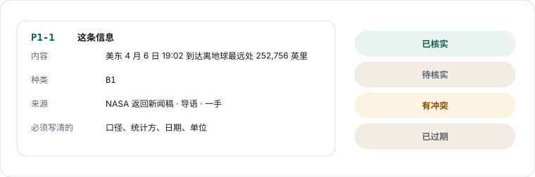
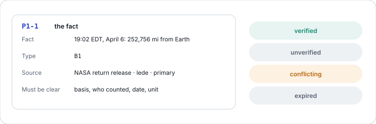
news-artemis/content.md · P1-2| 内容Fact | 2026 年 4 月，NASA 宇航员 Reid Wiseman、Victor Glover、Christina Koch 和加拿大航天局宇航员 Jeremy Hansen 乘 Orion 绕月后返回地球In April 2026, NASA astronauts Reid Wiseman, Victor Glover and Christina Koch, with CSA astronaut Jeremy Hansen, flew Orion around the Moon and returned |
|---|---|
| 种类Type | A1 |
| 来源Source | NASA 返回新闻稿 · 题图说明和导语 · 2026-11-08 · 一手NASA return release · caption and lede · 2026-11-08 · primary |
| 必须写清的Must be clear | 时间、主体、原始出处Time, subjects, original source |
| 状态State | 已核实verified |
每一步都要你确认，交接前还有脚本拦错
Every step waits for you — and a script blocks the rest
三步表里每一步都有一列「结束条件」。它不是建议，是这一步能不能往下走的条件。
Each step in the skill's table has a column called "exit condition". It isn't advice; it's what has to be true before the next step starts.
| 步Step | 结束条件Exit condition | 状态行Status |
|---|---|---|
| 1 | 用户确认效果和形式You confirm the effect and form | 效果待确认effect pending |
| 2 | 用户确认打法和框架You confirm the angle and frame | 框架待确认frame pending |
| 3 | 交接的条件全满足All handoff conditions hold | 补齐中 → 已交接filling in → handed off |
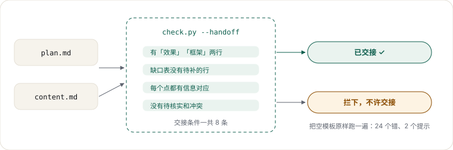
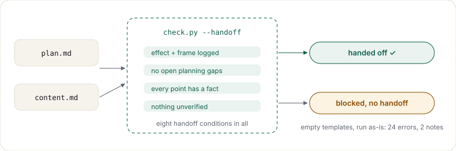
交接要过 8 条
Handoff has to clear eight conditions
- 确认记录里有「效果」「框架」两行。The confirmation log has both an effect and a frame line.
- 缺口表里没有归「策划」还「待补」的行。No gap row is still owned by planning and marked open.
- 每个要讲的点，内容表里至少有一条信息对应。Every talking point maps to at least one fact in the content table.
- 这些信息没有「待核实」，也没有「有冲突」。No fact is unverified or conflicting.
- 要讲的点和信息写的是内容，不是动作。Points and facts state content, not instructions.
- 归「下游」的行写清了缺什么、哪一段。Rows owned by the next step say what's missing and for which segment.
- 每段至少一行说法；约束都已核实或是设定。Every segment has wording; every constraint is verified or declared as design.
check.py --handoff通过。check.py --handoffpasses.
真实的拦错输出
What it actually says when it blocks you
把仓库里那两个空模板原样拷出来跑一次，它拦下 24 处。下面是其中三行，和最后那行结论：
Copy the two empty templates out of the repo and run it: it stops on 24 things. Three of the lines, plus the verdict:
plan.md:需求: 「用途和场景」还是「待你定」，用户定了才能交接
content.md: P1 的「a」在 content.md 里没有对应的信息
content.md:约束: K1 还是「〔待核实〕」：约束要已核实或是设定才能交接
24 个错、2 个提示自己复现一遍：
Reproduce it yourself:
# 从仓库根目录
D=$(mktemp -d)
cp skills/ai-content-planner/templates/*.md "$D"/
python3 -I skills/ai-content-planner/scripts/check.py "$D" --handoff检查脚本只用 Python 标准库（要 Python 3），不联网，不要 API Key——谁都能在本地跑出同样的结果。The checker uses only the Python standard library (Python 3), makes no network calls and needs no API key, so anyone gets the same result locally.
交给下游：格式写进第二行，下游才读
Hand it off: the format is on line two, and that's what the next step reads
# plans/<短名>/plan.md 的开头两行
格式：ai-content-planner/3
状态：已交接（2026-11-16）。…下游读效果、形式、说法、素材、约束这几节；引用的时候用 seg（段）、ref（信息编号）、rule（约束编号）对回来，不靠猜。
The next step reads the effect, form, wording, assets and constraints sections. References come back as seg (segment), ref (fact ID) and rule (constraint ID) — nothing is guessed.
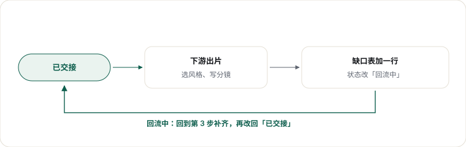
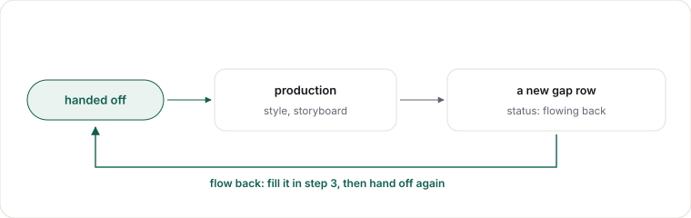
出片时发现内容不够，就回流
If production finds a hole, it flows back
- 下游在缺口表加一行，写清缺什么、哪一段。The next step adds a row saying what's missing and for which segment.
- 状态改成「回流中」，回到第 3 步补；要是推翻了效果或框架，就回到更早的步。Status becomes "flowing back" and it returns to step 3; if the effect or frame itself is wrong, it goes further back.
- 补完重跑检查，状态改回「已交接」。When it's filled, the check runs again and the status goes back to "handed off".
news-artemis/plan.md · 状态行已交接（2026-11-08）。下一步转 ai-coding-video 的 storyboard.md 选风格、写分镜。Handed off (2026-11-08). Next: pick a style and write the storyboard in ai-coding-video's storyboard.md.
做视频那条线是 AI-Coding-Video：它从 plans/<短名>/ 接着选风格、写分镜、出片。
The video line is AI-Coding-Video: it picks up from plans/<short-name>/ to choose a style, write the storyboard and render.
三条路装上它
Three ways to install it
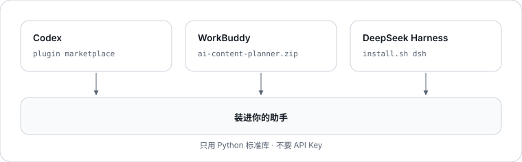
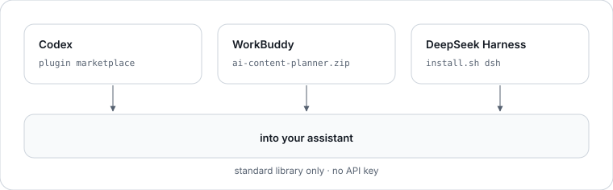
Codex
插件市场，两条命令。
From the plugin marketplace, two commands.
codex plugin marketplace add chans-gh/AI-content-planner
codex plugin add ai-content-planner@ai-content-plannerDeepSeek Harness
用仓库里的安装脚本，装到用户级或某个项目。
With the repo's install script, user-wide or per project.
# 用户级 → ~/.dsh/skills/
scripts/install.sh dsh
# 只装进某个项目 → 该项目的 .dsh/skills/
scripts/install.sh dsh ~/my-projectWorkBuddy
当技能包上传：到 Releases 下 ai-content-planner.zip（含子代理 agents/），解压后放进助手的 Skill 目录，或直接上传到 WorkBuddy 等「上传技能包」的助手。也可以自己打包。
Upload it as a skill pack: grab ai-content-planner.zip from Releases (it includes the agents/ subagents), unzip it into your assistant's skill folder, or upload it straight into WorkBuddy and similar "upload a skill pack" assistants. You can also build the zip yourself.
scripts/install.sh zip # → dist/ai-content-planner.zip也能装在 Claude Code 上Also works with Claude Code
同样的插件市场，两条命令；也可以 scripts/install.sh claude 装到 ~/.claude/skills/。
Same marketplace, two commands — or scripts/install.sh claude into ~/.claude/skills/.
claude plugin marketplace add chans-gh/AI-content-planner
claude plugin install ai-content-planner@ai-content-planner装完不用配 Key：只用 Python 标准库（检查脚本要 Python 3），读网页、读文档用你助手自带的工具。
Nothing to configure afterwards: no API key, only the Python standard library (Python 3 for the checker), and it reads pages and documents with the tools your assistant already has.
三步：定效果、定框架、补齐
Three steps: effect, frame, content
交出去的是一份稿子，不是几句话。上面那个示例是 8 段、38 条信息，每条都带种类、来源和状态——下游拿到的就是这些。
What comes out is a document, not a few sentences. The example above is 8 segments and 38 facts, each with a type, a source and a state — that's what the next step receives.
你要是在做视频那条线，这份稿子就是它的上一环：先在这里把内容定下来，再交给 AI-Coding-Video 选风格、写分镜、出片。
If you're on the video line, this document is the step before it: settle the content here, then hand it to AI-Coding-Video for style, storyboard and render.